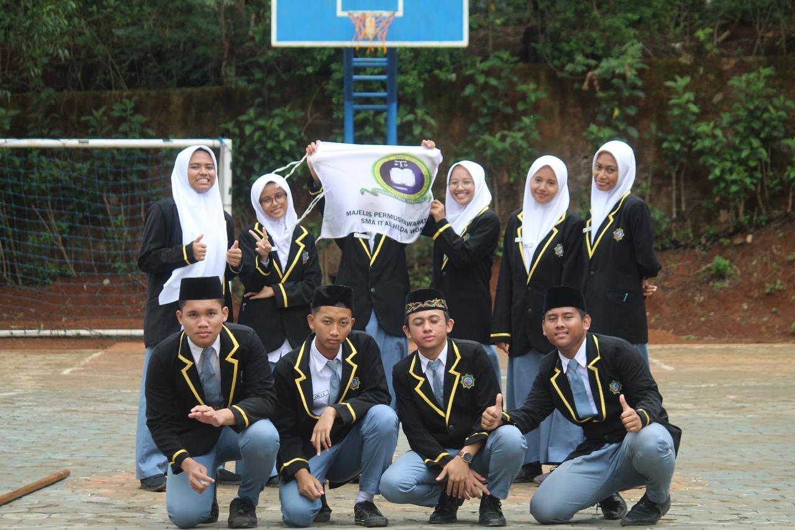
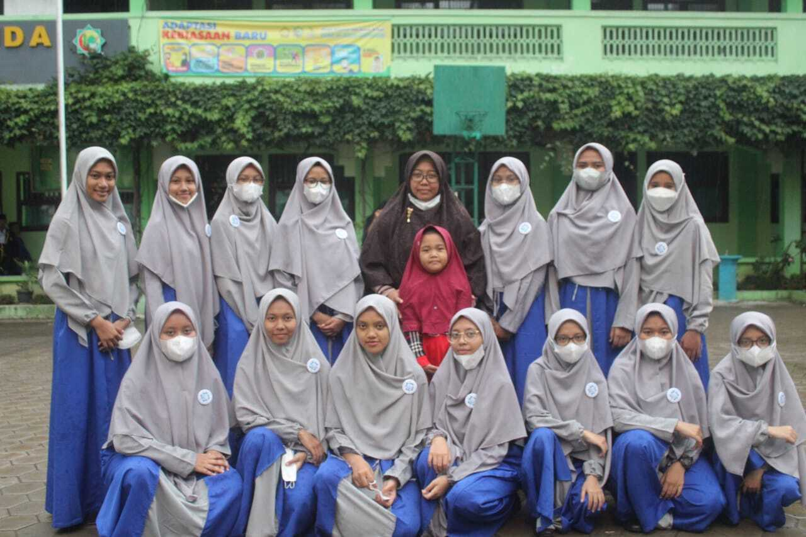
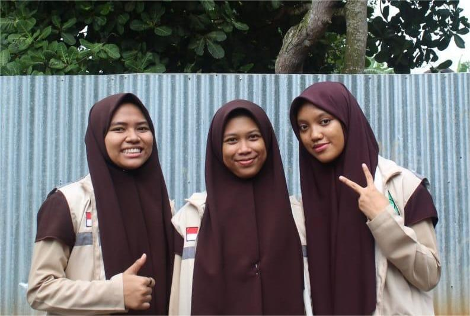

Kegiatan yang pernah saya ikuti

Saat SMA saya pernah mengikuti organisasi MPS atau Majelis Permusyawaratan Siswa. Saya diamanahi sebagai Ketua Komisi 2 (Keamanan dan Ketertiban) untuk menjaga sekolah tetap kondusif dan aman.

Saya juga mengikuti OSPPIT (Organisasi Santri Pondok Pesantren Islam Terpadu) sebagai Bendahara Bidang Kebersihan Lingkungan Hidup. Peran saya mengelola keuangan dan memastikan lingkungan pondok tetap bersih.
